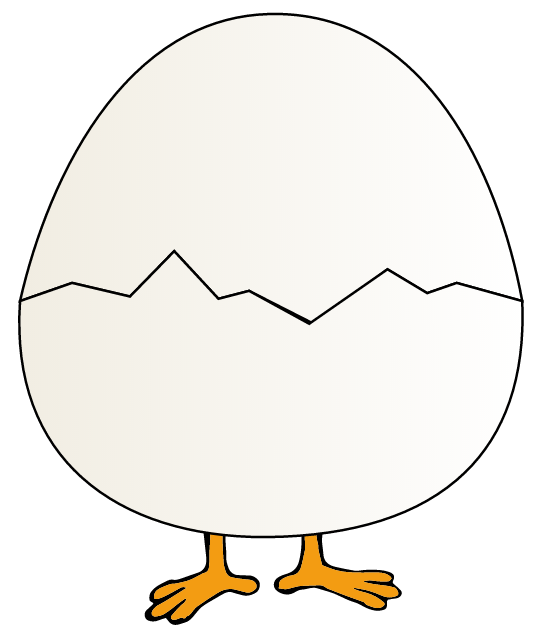
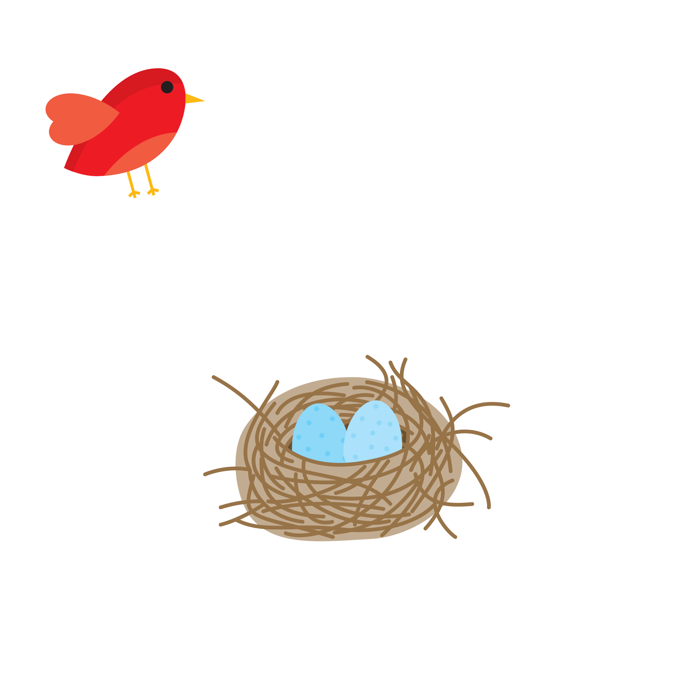
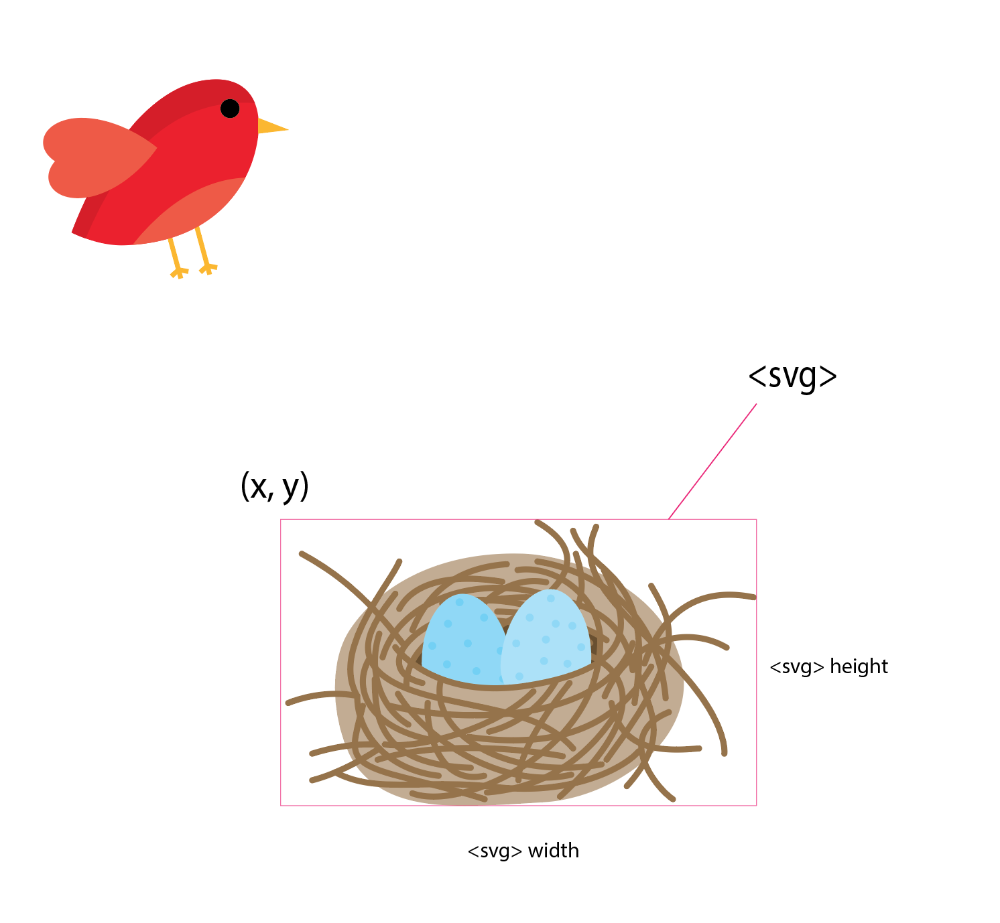
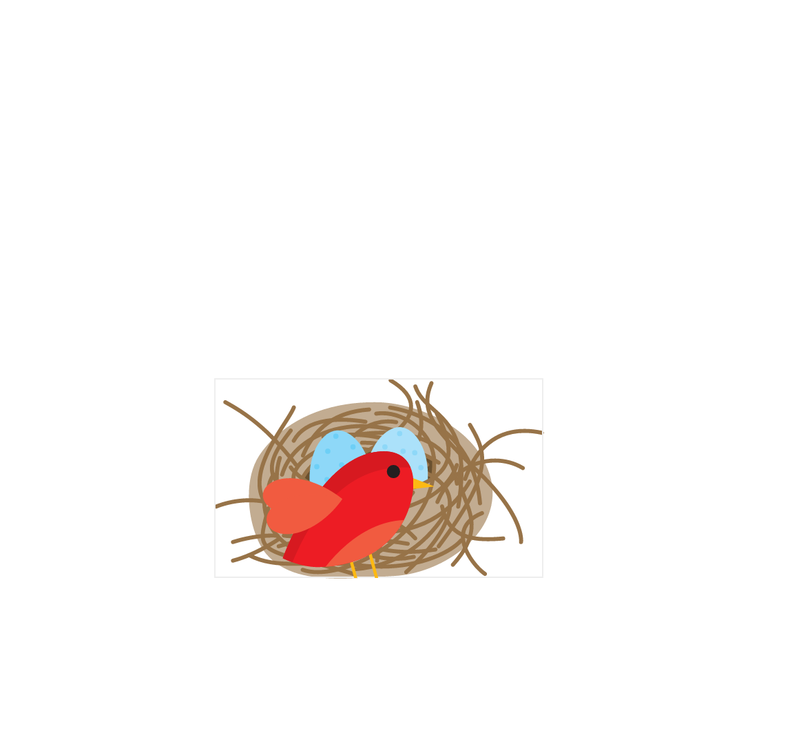
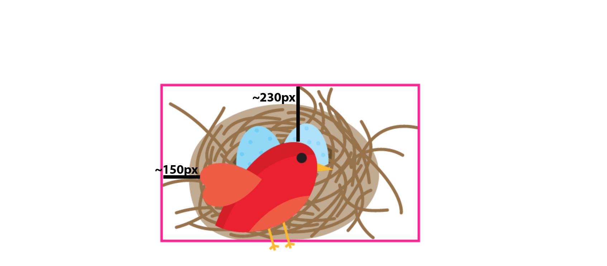
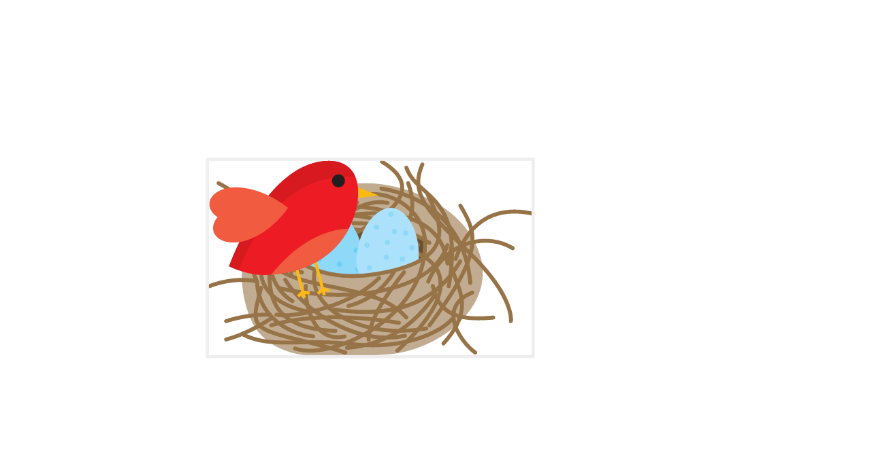
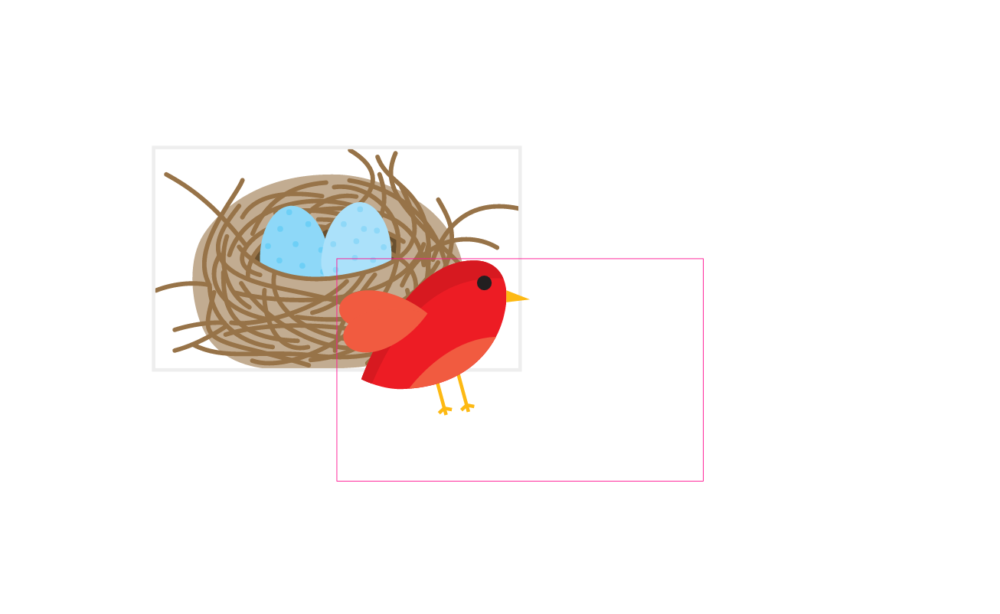

Positioning elements inside an SVG image is very similar—if not identical—to positioning elements absolutely in HTML. Every element in SVG is positioned "absolutely" relative to the SVG viewport, and the position inside the viewport is governed by the current coordinate system in use. But this similarity in positioning elements should not conceal the fact that there is a fundamental difference between SVG elements and HTML elements: SVG elements do not have a box model like HTML elements do in CSS.
Before we move on, let’s quickly review what a box model is in CSS and how it affects positioning things.
Quick Review of The Box Model in CSS
Every HTML element has a box model in CSS that is composed of four boxes: the content box, the padding box, the border box, and the margin box.
box-sizing entry in the Codrops CSS Reference.
Normally, when an element’s size is set, the width and height properties determine the width and height of the element’s content box. Any padding added to the element will increase the total computed width and/or height of the element—this is how the default box model works in regards to sizing the element. The box-sizing property allows you to control how the sizing of an element’s dimensions works. More specifically, using the box-sizing property, you can tell the browser to include the padding width and/or border width in the width of the element, without increasing that width. This is useful for many use cases, but mostly so for when you’re building grid systems in CSS, for example. You can learn all about this property and its values in this entry over on Codrops.
An element’s box model is also used to create a positioning context for the contents of the element, where applicable, or for the element itself.
When the value of an element’s position changes from the default static value, it either creates a positioning context for its descendants or for itself. Whenever the default position changes, a positioning context is needed to specify where and how an element is going to be positioned outside the default page’s content flow. (You can learn more about this subject here.)
If you want to remove an element from the page’s content flow, you can do that by positioning it absolutely. Positioning an element absolutely means it will be positioned relative to one of its ascendants, using that ascendant’s box as a positioning context.
Each positioning context, however, requires a coordinate system. The cooridnate system is established by the dimensions (width and height) of the element’s box model. Any descendant of the element will then be positioned inside and relative to the element using this coordinate system.
In SVG, however, there is only one coordinate system by default used to position elements inside the viewport: the current coordinate system in use, established by the SVG viewBox. And so when an element needs to be positioned inside an SVG, it is positioned relative to the entire SVG viewport.
Technically, there are two default coordinate systems in an SVG. But only one of those is relevant when dealing with positioning SVGs unless you explicitly change the values of both. If you're not familiar with SVG coordinate systems and how they're established and used, I highly recommend reading this article before continuing through this one. In this article, we'll be dealing with the ‘normal’ case where we only need to deal with one.
Individual elements don’t have a box model and therefore don’t have their own coordinate systems that can be used as positioning contexts for other elements. So, what if you do want to position an SVG element relative to another SVG element or group of elements?
The answer is: nested <svg>s.
Nesting SVGs
One of my favourite things about SVG is that it’s an image defined by markup. And that markup is what gives us a lot of power over the contents of that image and how they are displayed.
You can nest <svg>s. That is, you can put an <svg> inside another <svg>. And then you can put another <svg> inside that <svg>. And then you can put yet another svg inside that svg. And you can go on and on.
You can nest SVGs as deeply as you want. How many levels deep you want to go depends on what you want to do and whether or not you need to, of course. I’ve personally never needed to nest SVGs more than two levels deep.
<svg xmlns="http://www.w3.org/2000/svg">
<!-- some SVG content -->
<svg>
<!-- some inner SVG content -->
</svg>
<svg>
<!-- other inner SVG content -->
</svg>
<svg>
Some notes about nested <svg>s
- The inner
<svg>element does not require specifying a namespace (xmlns) on it because it is assumed to be the same namespace as the outer<svg>’s namespace. Even the outer (root)<svg>does not require a namespace if it is embedded inline in an HTML5 document. - You can use a nested SVG to group elements together and then position them inside the parent SVG. Of course, you can group elements inside an SVG using the group tag
<g>, but using an<svg>instead has a few advantages, such as being able to specify the group’swidthandheight, and positioning it using absolute valuesxandyinstead of having to use transforms (for<g>). By specifying a width and height to the<svg>, you restrict the content inside it to the bounds of the viewport that is defined by thewidth, andheightattributes. Any content that lies beyond these bounds will be clipped. - Percentage values specified for elements inside an inner
<svg>will be calculated relative to thatsvg, not relative to the rootsvg. Percentage values specified on the inner<svg>itself will be calculated relative to the rootsvg.
So, Why Nest <svg>s?
One use case for nesting SVGs is creating interesting responsive effects where the contents of the SVG would hide or reveal other portions of content at different viewport sizes.
Such an example is the following SVG illustration of a small bird inside an egg:

Normally, if the SVG is responsive, resizing the screen would make the entire SVG smaller while maintaining the positions of the content inside of it and the spatial relationships between them:
By nesting svg elements, we can create separate “layers” inside the root <svg> that we can then control so that the contents of these layers would change position inside the root svg as the viewport size changes. By doing that, we can show and hide different portions of content inside the SVG as desired.
By nestingsvgelements, we can create separate “layers” inside the main<svg>
For example, we can separate the above illustration into 3 layers that would reveal the small bird on smaller sizes:
This effect is achieved by using different preserveAspectRatio values on each of the inner svgs. This ensures that the contents of each svg—i.e. the contents of each ‘layer’, ‘sticks’ to either edge of the root SVG, thus revealing the content in between.
I’ve written a detailed article about how to achieve this; so, if you’re interested, do check it out.
‘Relative’ Positioning in SVG Using a Nested svg
The fact that contents of an inner svg are positioned relative to that svg itself gets us one step closer to positioning elements relative to other elements as opposed to being relative to the root svg.
But how exactly does a nested svg enable us to position one element relative to another non-svg element?
Before we answer that question, we need to understand what an SVG element’s Bounding Box is.
What is a Bounding Box?
Not all SVG elements are created equal. The powerful thing about SVG is that its basic shapes allow us to create all kinds of non-rectangular shapes: from arbitrary paths, to open or closed polylines and polygons, to circles and ellipses.
Because of the nature of these elements and their lack of a CSS box model, the SVG specification compensates for the lack of a box model by introducing the concept of a bounding box:
The bounding box (or "bbox") of an element is the tightest fitting rectangle aligned with the axes of that element's user coordinate system that entirely encloses it and its descendants.
In simpler words, a bounding box is the smallest rectangle that you can draw around an element, that encloses the entire element—all its points and edges.
Three kinds of bounding boxes can be computed for an element:
The object bounding box is the bounding box that contains only an element’s geometric shape.
The stroke bounding box is the bounding box that contains an element’s geometric shape and its stroke shape.
The decorated bounding box is the bounding box that contains an element’s geometric shape, its stroke shape and its markers.
An element’s bounding box is characterized by properties that can be retrieved using the getBBox() method—the SVG equivalent of getBoundingClientRect(): x, y, width and height.
var svgElement = document.getElementById('el');
bbox = svgElement.getBBox();
console.log( bbox.x ) ;
console.log( bbox.y ) ;
console.log( bbox.width ) ;
console.log( bbox.height ) ;
Using the element’s bounding box, we can fake the presence of a coordinate system around that element, which we can then use to position other elements.
Using the element’s bounding box, we can fake the creation of a coordinate system around that element, which we can then use to position other elements.
More specifically, we will be creating and using an inner <svg> to establish a new cooridnate system around an element. The properties of the <svg> will be defined by the properties of the element’s bounding box: the x, y, width, and height properties.
Creating a new coordinate system around an SVG element
Suppose we have the following SVG image (courtesy of Vecteezy) with the bird and the nest:

Let’s have some fun. The bird in the above image is trying to get back to its nest. (My idea of fun is, admittedly, not than fun.)
Normally, we are able to position the bird above the nest by specifying its position inside the SVG using the entire SVG canvas’s coordinate system.
We can certainly do that.
But, ideally, we’d be able to position it by using percentage values that would be calculated relative to the nest’s “box”. We can mimic that by creating a coordinate system around the nest using our new <svg> element. The <svg> element has its own coordinate system established by its width and height. We will use that coordinate system to make up for the missing coordinate system on the nest.
Then, we move the bird (the actual bird content) into that <svg> tag. By being contained by the <svg>, the bird‘s position will be calculated relative to the coordinate system established on that <svg>.
But to create the relative connection between the bird and the nest elements, we need the positioning context of the bird—which is our <svg>—to resemble a coordinate system around the nest.
In order to do that, we will position the <svg> on top of the nest, visually. It’s important to note here that the inner SVG does not actually wrap the nest—the nest elements are not contained inside the <svg> tag. We’re only positioning the <svg> on top of the nest, visually, so that it seems as though the <svg> is the visual representation of the nest’s coordinate system.
In order to determine the exat position of the <svg> (its x and y position inside the root svg) and its dimensions, we will be using the nest’s bounding box properties.
The position of the <svg>—the x and y values—will be equal to the x and y values of the nest’s bounding box. That is, the bounding box of the group of elements forming the nest. (Groups can have bounding boxes, just like single elements can.) The inner svg will also have explicit height and width values which are equal to the height and width of the nest’s bounding box.
Here is what it looks like visually:

What the above image is missing is the fact that the bird is now contained inside of it. So this is what it really looks like:

The grey border is the border representing the bounding box, and also the new coordinate system around the nest established by the svg.
It’s important to note here that the bird is now positioned relative to the coordinate system of the inner <svg>. Notice how it is offset by some amount of pixels from both the top and left edges of the inner svg, just like it was positioned relative to the root svg. That is fine for now. We will need to get rid of that space to get a finer control over the position of the bird. But we’ll get to that shortly.
Another thing to note is that since the inner svg has an explicit height and width which are equal to the height and width of the nest’s bounding box, the bird’s feet get cut off at the bottom due to the way it is positioned. If you have other, more or different elements in your own projects, those might get cut off too. You definitely don’t want that. So to work around that, you need to explicitly set the overflow value to visible on the inner svg. This will ensure that the inner svg behaves only like a positioning context, not like a container that restricts its contents to a specific area visually.
Here is what the code looks like:
<svg id="birds" xmlns="http://www.w3.org/2000/svg" width="100%" viewBox="0 0 3945.8 2400">
<title>Bird & Nest</title>
<g id="nest">
<path ...>
<!-- ... -->
</g>
<!-- The ID I'm giving this SVG is just for demonstration purposes -->
<svg x="698" y="1219" width="1055" height="641" viewBox="0 0 1055 641" style="overflow: visible;" id="coord-sys">
<g id="bird">
<path ...>
<!-- ... -->
</g>
</svg>
</svg>
Just like with the root svg, the viewBox value of the inner SVG svg#coord-sys is determined by its dimensions.
Next up, we need to position the bird inside the new coordinate system. I won’t refer to the inner svg as “inner svg” anymore—I’ll be referring to it as svg#coord-sys.
Since we will be positioning the bird inside the svg#coord-sys, we need to be able to specify a position for the group of elements forming this bird. After all, the bird is not made up of one element only—it is a group of shapes. And so we need to position a group of elements, not just one element. The group of elements forming the bird is wrapped in a group (<g>) element.
But the problem is: the <g> element does not have x and y attributes. So we can’t simply move it to a specific position like so:
<g id="bird" x="50%" y="50%">
Usually, to move a group of elements around inside an SVG, we use SVG or CSS transform functions (translation transformation, most of the time). You can use transforms to move the group around, sure. But that would negate the whole idea we’re trying to achieve and would make the new coordinate system useless. After all, we could have used transforms to position the bird close to the nest inside the root svg without having to create a new coordinate system.
What we want is to mimic the way elements are positioned in CSS, relative to each other. So to say “move this group of elements to the position (x, y) inside this particular positioning context”.
Since <g> does not have x and y attributes, we’re going to substitute it with another <svg>.
<svg id="birds" xmlns="http://www.w3.org/2000/svg" width="100%" viewBox="0 0 3945.8 2400">
<title>Bird & Nest</title>
<!-- ... -->
<svg x="698" y="1219" width="1055" height="641" viewBox="0 0 1055 641" style="overflow: visible;">
<svg id="bird">
<!-- ... -->
</svg>
</svg>
</svg>
The svg wrapping the bird has an ID bird. This SVG, as opposed to its ancestor, will only serve as a container and, even though it does create a new coordinate system, we won’t be using that system. Using this svg, we can now move the bird around inside the new coordinate system established around (on top of) the nest.
At this point, it is best to get rid of the white offset space around the bird. The innermost svg#bird has the same dimensions and viewBox as its wrapping svg#coord-sys; which means that in order to move the bird around, we need to take this white space into account. So if we want to move the bird to position it at the top left corner of the system, we won’t be able to simply say set x and y to zero—we will need to use a negative offset in both directions to achieve it. That’s not practical. We would also need to take this offset into account wherever and however we want to position the bird later.
At this point, you need to be not only familiar but also comfortable with how the viewBox works. I’m going to assume you are. If you’re not, pause here and go read this article first.
We will change the value of the viewBox of svg#bird to crop the white space out. (So we are going to use its coordinate system, but only a little bit.)
By default, a nested svg will occupy 100% the width and height of its container, unless you tell it otherwise.
So svg#bird now has the exact same dimensions as that of the svg#coord-sys. It’s the one with the pink border in the following image:

We don’t need the dimensions to be different in this example so we will leave them as they are.
The image above also shows the amount of white space by which the bird is shifted inside that svg. So in order to “unshift” it, we will change the value of the viewBox of the svg#bird to crop that white space out.
<svg id="birds" xmlns="http://www.w3.org/2000/svg" width="100%" viewBox="0 0 3945.8 2400">
<!-- ... -->
<svg x="698" y="1219" width="1055" height="641" style="overflow: visible;">
<svg id="bird" viewBox="150 230 1055 641">
<path ...>
<!-- ... -->
</svg>
</svg>
</svg>
That will shift the bird so that it is positioned at the top left of the coordinate system. I’m unfocusing svg#bird in the following image, so only the nest’s coordinate system is still shown, and the new position of the bird inside of it:

So now that the bird is positioned at the top left of its wrapper, we can move it around and get the expected result every time. For example, if we were to move the bird by 50% in both directions:
<svg id="bird" style="overflow: visible" viewBox="150 230 1055 641" x="50%" y="50%">
We would get the following result:

With this setup, we can now move the bird around inside the nest’s coordinate system just like we would move an HTML element inside another one in CSS. Both relative and absolute position values work here too.
Pretty nice, huh? This is possibly the closest we can (currently) get to relative positioning in SVG today.
Granted, to get here is not the simplest process, but once you’ve got a good grasp of how SVG coordinate systems and the viewBox work, it’s hopefully not so complicated.
Here is a live demo of the above bird and nest, with the position of the bird set so that it stands at the edge of its nest:
See the Pen [Article Demo] Relative Positioning in SVG by Sara Soueidan (@SaraSoueidan) on CodePen.
Final Words
The example used in this article is a very specific example and is, admittedly, not the most practical use case of all times. Your use case(s) are likely to be entirely different. You might be working with a very different SVG where you may not even need to do any viewBox cropping at all. If you create your SVG yourself, you can position your element (e.g. the bird in our case) at the top left of the SVG canvas, so that when you wrap it in another svg, it would also be positioned at the top left, and you wouldn’t have to do any cropping at all. I left this example slightly more complex just so we can cover more scenarios. (And because I was a little lazy to edit the SVG in Illustrator after having written half of this article. But I keep wanting to deny that.)
But the takeaway is how to mimic relative positioning using nested svgs. Whether you use one level, two levels, or more, the concepts are the same.
You might find this technique useful for positioning SVG UI elements relative to each other. Or maybe relative positioning in dynamically created SVGs. Your imagination is the limit.
I hope you found this article useful. Thank you for reading!